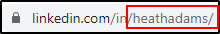
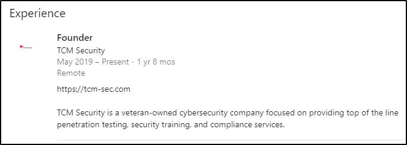

You can look for:- Profile picture images
- Banner images
- Profile info (location, job, resume, profession, cellphone number, agency etc.)
We can check for the username on the URL on other channels like Google:

Linkedin have also a contact info section on some profiles:

We can even learn a lot from the Activities (even documents) and from the Experience section:


Reccomendation will show you which people worked with the target!